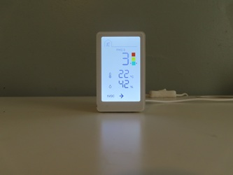
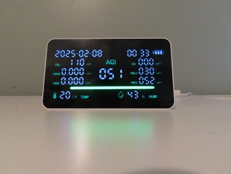

The two air quality moniters that were used are listed below
1.VINDSTYRKA
This monitor checks the air quality by monitoring harmful particles (PM2.5), humidity and total Volatile Organic Compounds (TVOC) in your home. You can place it in the living room, bedroom, and other rooms. With its small size, you can move it with ease from 1 room to another so you don't have to worry if the air quality is good negative and even medium!👌
2.11-in-1 Air Quality Monitor, Indoor
This product is very useful.It measures CO2 (carbon dioxide), HCHO (cancer causing substance), TVOC (Total Volatile Organic Compounds.), CO (Carbon monoxide), PM2.5 ( wich are particles that are 2.5 microns less in diameter.), PM10 (Those with a diameter of 10 microns or less), and AQI (Air quality). This divice is rechargable and is easy to move from room to room!👌
